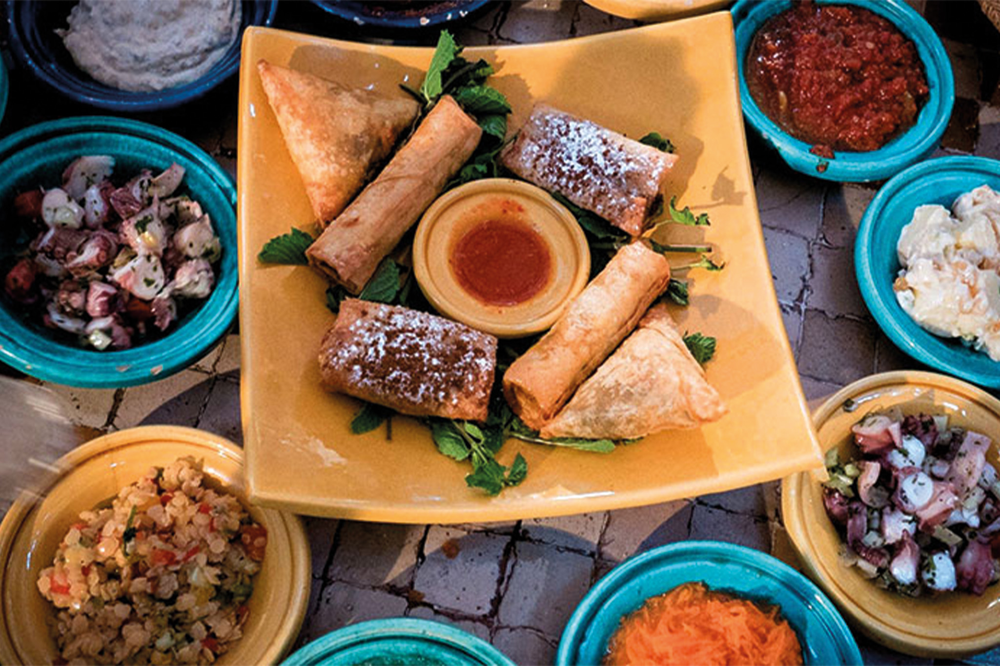
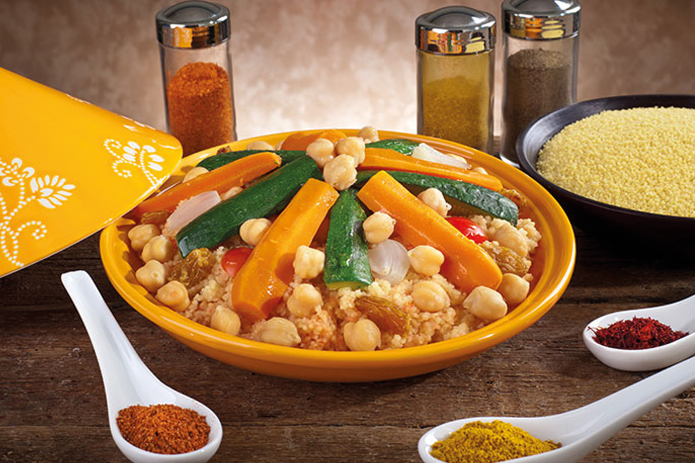
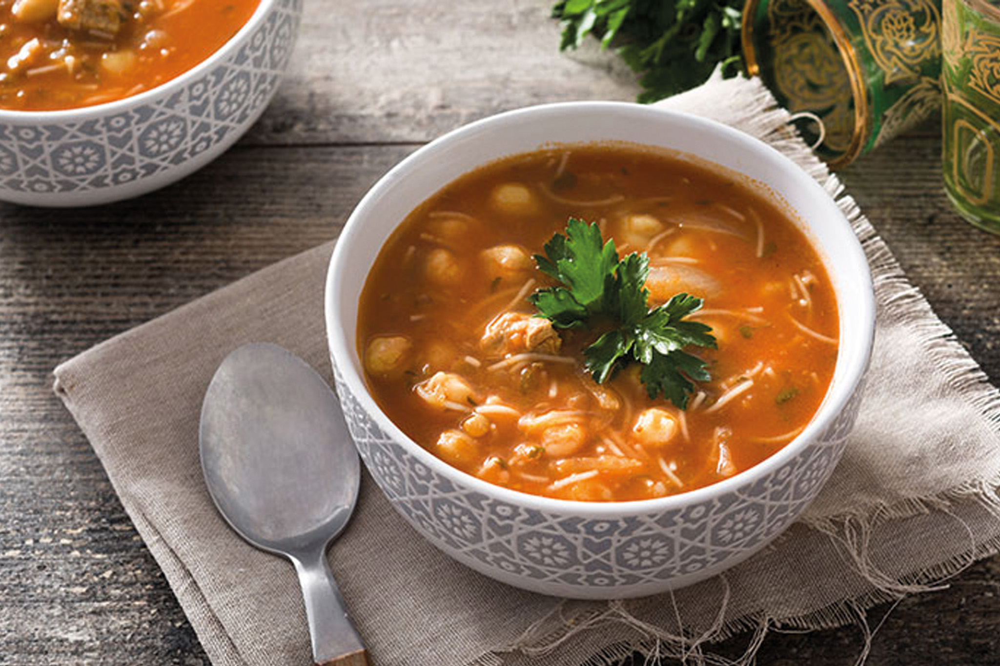
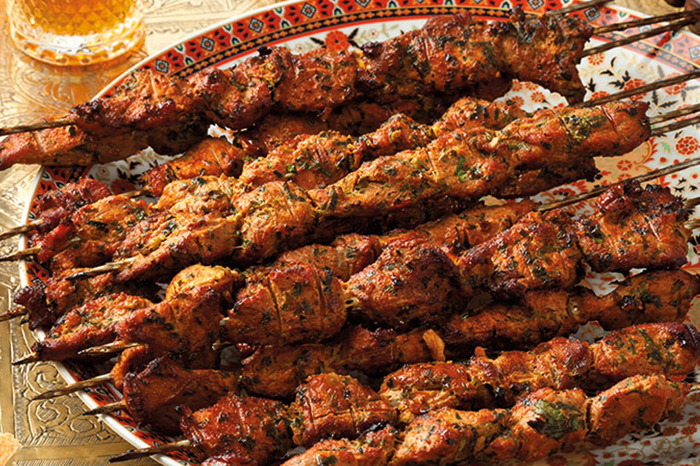
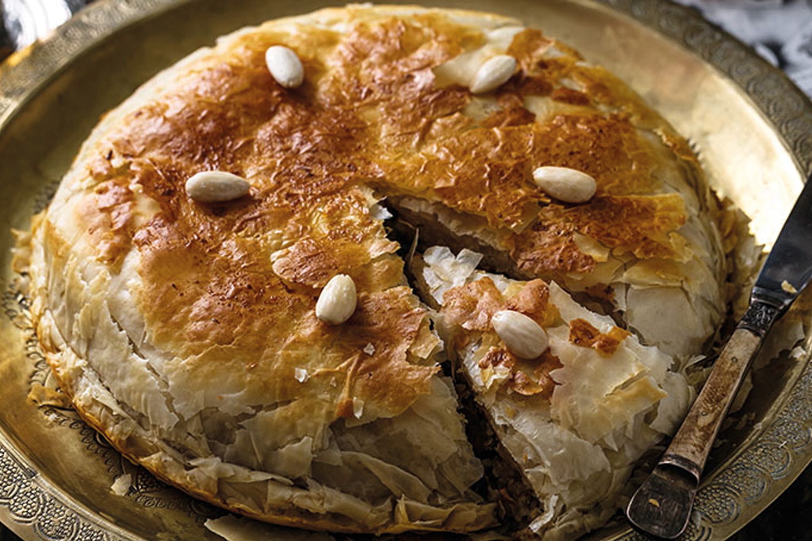
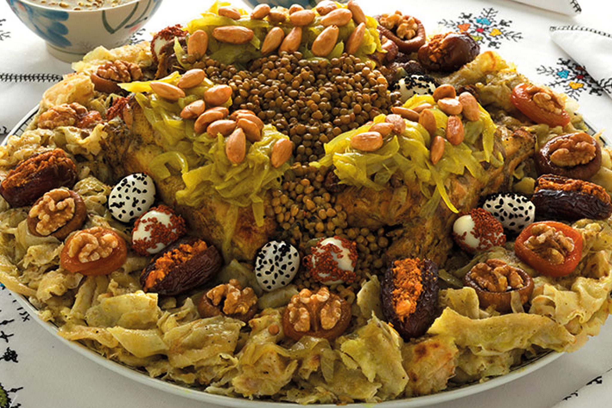
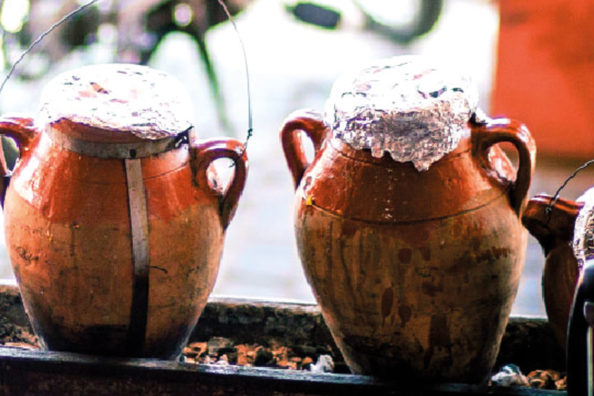
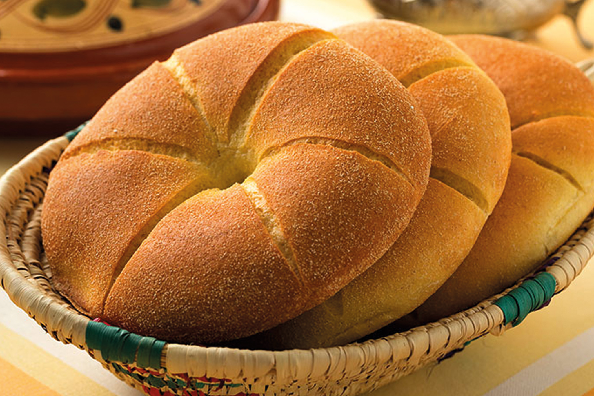
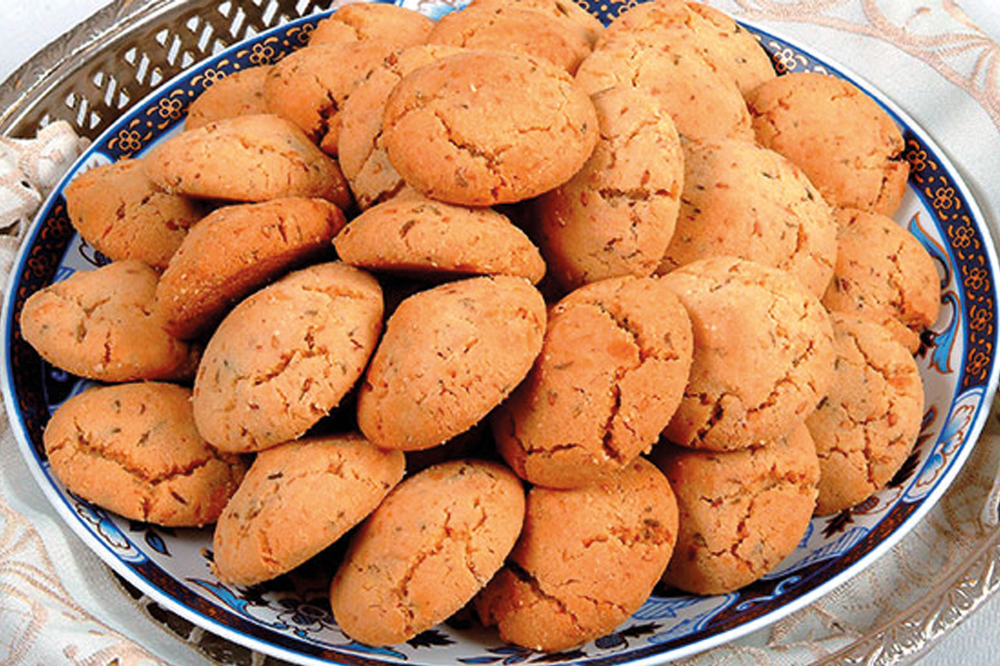

Las ensaladas
Normalmente se sirven al principio de las comidas, los entrantes marroquíes se presentan como acompañamiento de un plato principal. Difieren de una región a otra, pero generalmente consisten en una ensalada marroquí de verduras crudas o cocidas, Briouates rellenos de pollo o carne picada, un pisto de pimientos y tomates que llamamos Tektouta y el famoso Zaâlouk que es un puré de berenjena. Pueden ser sazonadas de manera diferente, pero cada receta aporta su propio sabor y color.

El cuscús
¡De origen bereber, el cuscús es el producto emblemático de Marruecos! Presente en todos los hogares y restaurantes, es un plato de convivencia que tradicionalmente se come todos los viernes. Preparado de diferentes maneras, vegetariano, alrededor de la carne, el pescado o el pollo, e incluso dulce, a menudo se acompaña de un caldo de verduras "marqa" para realzar sus sabores.

La harira
Una típica sopa marroquí conocida por su fórmula reconfortante y nutritiva. Se sirve en la mayoría de los restaurantes, especialmente en el mes de Ramadán para romper la juventud, se compone de una sutil mezcla de legumbres, tomates, pasta y harina.
El Tagine
Es el plato más extendido en Marruecos. Con un método de cocción muy particular y múltiples versiones, este plato nunca deja de deleitar a los gustos más exigentes. Alimentos como el pescado, el pollo, la carne, las verduras y a veces las nueces, ciruelas y albaricoques, se cocinan al vapor con un conjunto indispensable de especias para darle sabor.

El Mechoui
forma tradicional de cocinar el cordero o la Este plato, heredado de la cultura turca, es una carne de vacuno que a menudo se guisan en un horno de barro.

La pastilla
Servido en forma de hojaldre, la pastilla de pescado, paloma o pollo y/o con almendras es un tótem de la cocina marroquí. Este plato con mil y una delicias, agradablemente sutil en la boca, está hecho para los amantes de lo dulce y lo salado.

La Rfissa
También conocido como "Trid", este plato hace con panqueques de hojaldre o msemmens marroquíes, pollo con caldo de cebolla, cilantro, ras el hanout, lentejas y fenogreco. R'fissa es muy rica en sabores y especias. Nativo de Casablanca, R'fissa es una tradición culinaria de la más profunda

La tanjia
Tradicionalmente se prepara con cordero o ternera en un tarro de terracota, es un plato emblemático de Marrakech. Se necesitan largas horas para su cocción, que se hace en el horno local. La carne es tan tierna y tan fragante que deleita los paladares más exigentes

pan
Esta comida es imprescindible en Marruecos y acompaña a casi todos los platos principales tradicionales. Pan de harina blanca, pan integral, pan de masa madre, hay algo para todos.

Ghriba
Estos pasteles también están en la parte superior de la lista de pasteles del Magreb y de la cocina oriental. En la ciudad, los encontrará en las pastelerías, pero también en las pequeñas tiendas de las medinas. Hechas de almendras y sémola, a menudo se espolvorean con semillas de sésamo para añadirles sabor